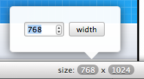

The  and
and  controls allow you to test your breakpoints with precession by letting you increase or decrease the with by a given amount. You can control the amount they increment by from the Preferences Panel.
controls allow you to test your breakpoints with precession by letting you increase or decrease the with by a given amount. You can control the amount they increment by from the Preferences Panel.
Responsive Resize has various tools that manipulate the viewport to help you test your responsive designs.
The Custom With and Height Buttons display the current width and height of the viewport. Clicking on one of the buttons will open a popup that allows you to adjust the value.
NOTE: you can access the popups quickly using the following keyboard shortcuts: ⌘[ for the Width and ⌘] for the Height.
The  and
and  controls allow you to test your breakpoints with precession by letting you increase or decrease the with by a given amount. You can control the amount they increment by from the Preferences Panel.
controls allow you to test your breakpoints with precession by letting you increase or decrease the with by a given amount. You can control the amount they increment by from the Preferences Panel.
NOTE: You can quickly increase or decrease the viewport with using the ⌘+ and ⌘- keyboard shortcuts.
The Rotate control allows you to 'Rotate' the viewport by swapping the current width and height.
NOTE: You can quickly rotate the viewport by using the ⌘R keyboard shortcut.